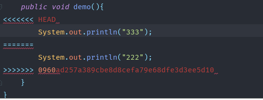
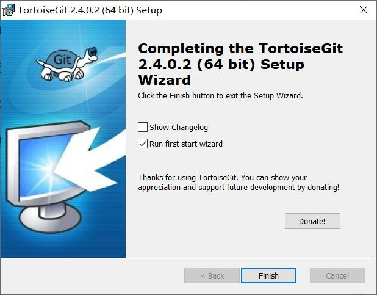
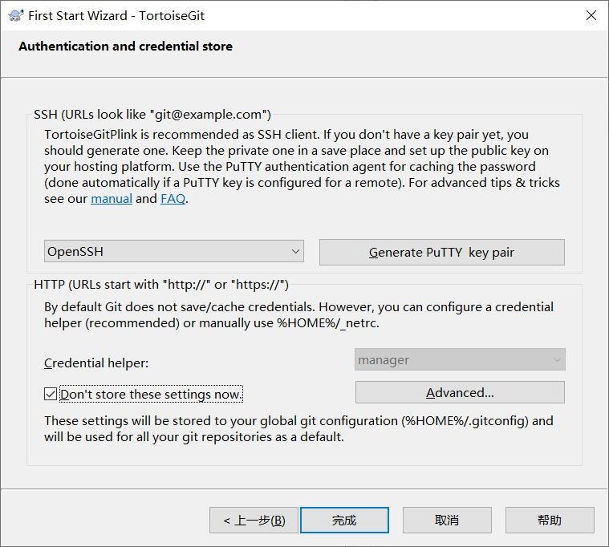
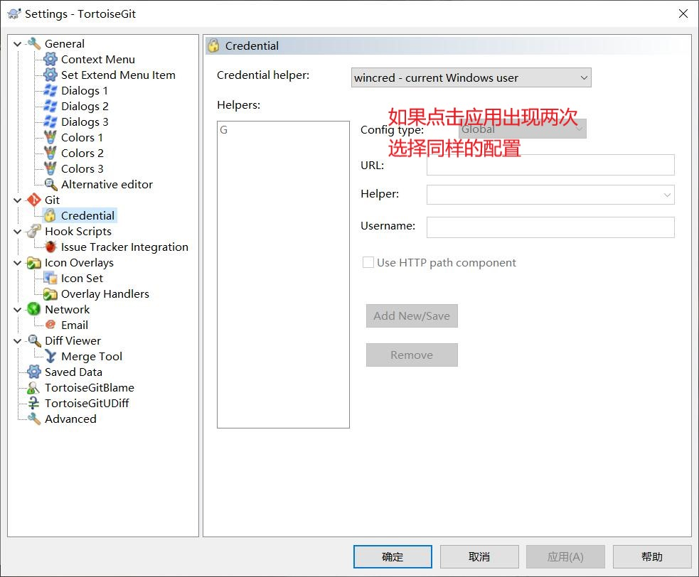
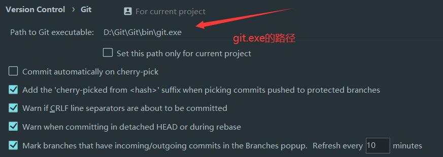
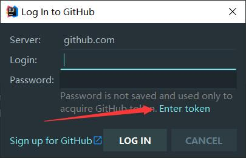
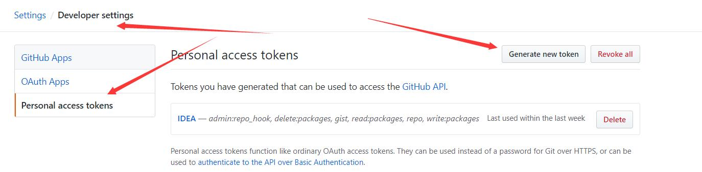
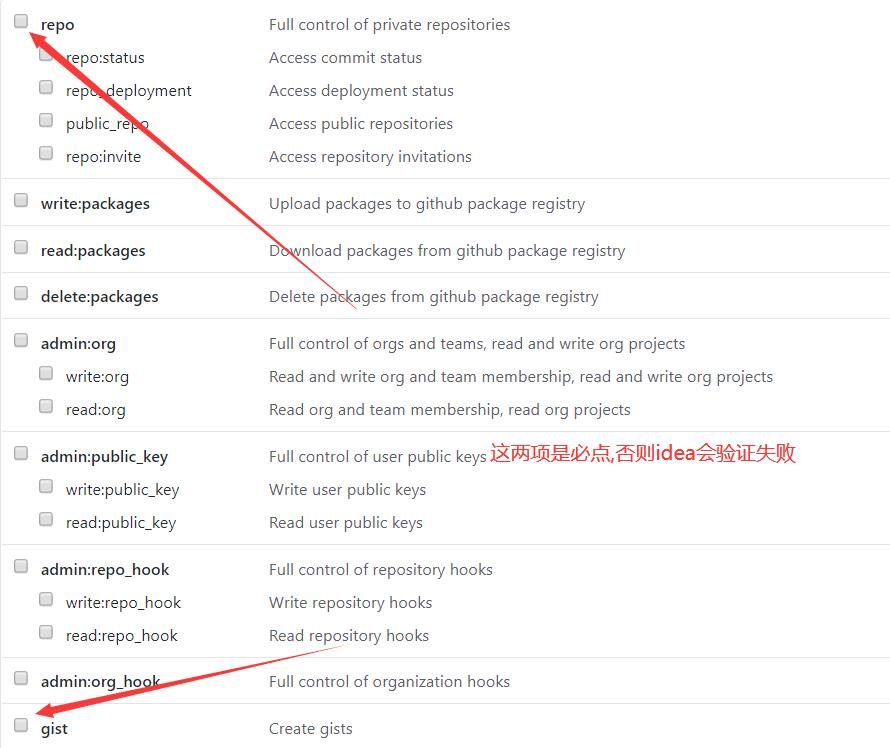

Git
是什么及为什么使用
git是一个强大的版本控制工具
例如在企业团队开发中,需要协同开发,每个人负责不同的模块,但又有可能依赖其他的模块
使用git可以解决这些问题,同时还可以对版本进行严格的控制与管理
安装及配置
官网:https://git-scm.com/download
一路点击下一步,取消最后的两个选项,点finish
安装完成后
配置用户名和邮箱
git config --global user.name "用户名"
git config --global user.email "邮箱地址"
配置后的文件在 C:\用户\{用户名}\.gitconfig文件中
生成ssh 秘钥与 github相关联
1. ssh-keygen -t rsa -C "邮箱地址"
默认生成到当前用户 C:\用户\{当前用户}\.ssh\id_rsa.pub
2. 进入github官网,登陆后
3. Settings --> SSH and GPG keys --> New SSH key
4. 将文件中的秘钥全部复制到 key 中
基本概念介绍
master : 默认开发分支
origin : 默认远程版本库
Index/Stage : 暂存区(工作区和版本库之间) add后的区域
workspace : 工作区 init后的区域
repository : 本地仓库 commit后的区域
remote : 远程仓库 github
head : 指针 可以通过指针切换版本
常用流程
git init : 初始化仓库 把这个目录变成Git可以管理的仓库
git add 文件名: 添加文件 直接写符号.将(全部文件) 把文件添加到本地仓库的暂存区
git commit -m "提交 注释" 提交到当前分支
git remote add origin 远程仓库地址 ：远程仓库与本地仓库添加关联 有关联后,就不用再写这行
git pull origin master : 在推之前先拉 更新代码
git push -u origin master 将代码推到远程仓库
git log 查看日志
git status 查看当前仓库状态
冲突
对同一行或者同一块区域的代码进行修改后,导致本地仓库与远程仓库无法合并,因为软件也不知道采用哪一段代码,需要人工解决

这是出现冲突后在推时出现的情况
冲突:不同的人修改了相同位置的代码
<<<<<<<HEAD 自己(当前分支)的代码 =======
======= 其他人的代码 >>>>>>>版本号(具体的版本号可以在命令行中查询)
手动解决冲突后提交或合并后提交即可
TortoiseGit:
使用git bash 需要很多重复的操作克隆 提交 推送,可以使用视图化工具简化操作
官网:https://tortoisegit.org/download/

点击finish后,会进入配置
填入用户名和邮箱

安装完成后可能会需要重启
重启完成后点击鼠标右键会出现
TortoiseGit --> settings 选择下方选项进行配置

安装完成后,在任意位置鼠标右键,可以完成快速克隆 提交...
Idea配置git
Settings --> Version Control

登录

如果选择上方的Enter token 登录
需要登录github官网 创建token


可能出现的问题
1. 解决git clone 克隆慢
开启代理(本人使用的ssr 默认端口是1080):
git config --global http.proxy socks5://127.0.0.1:1080
关闭代理:
git config --global http.proxy ""
如果代理没有关闭可能也会出现
fatal: unable to access 'https://github.com/xxx/xxx.git/': Failed to connect to 127.0.0.1 port 1080: Connection refused
可以使用命令关闭也可以在
C:\Users\{用户名}\\.gitconfig 中删除proxy代理
2. 解决github.com 无法访问连接超时
先在命令行ping官网 github.com
如果ping不通
在 C:\Windows\System32\drivers\etc\hosts 末尾添加
192.30.255.112 github.com git
185.31.16.184 github.global.ssl.fastly.net
3.删除所有文件
git rm * -r